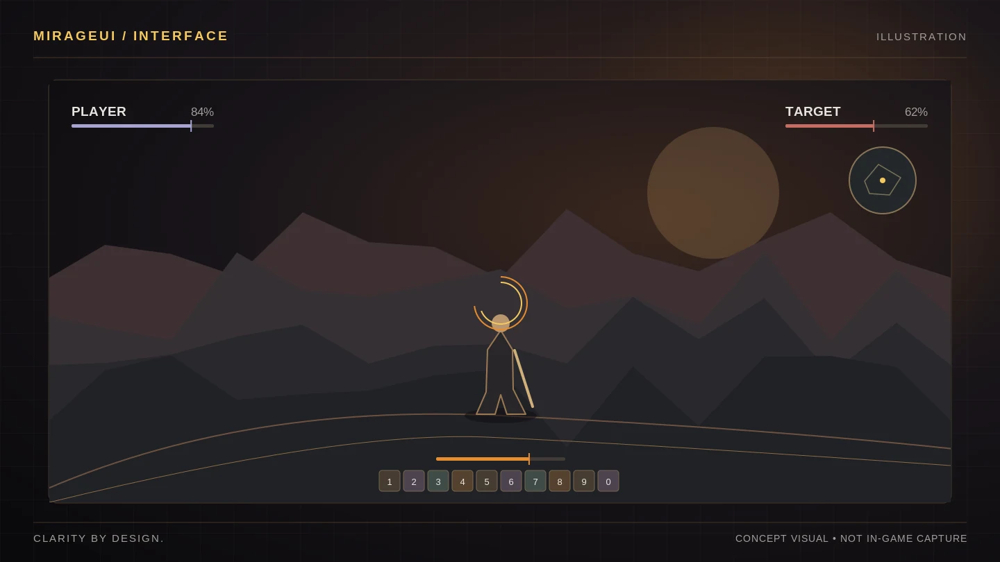
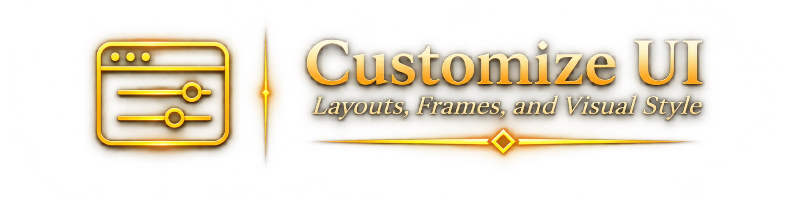
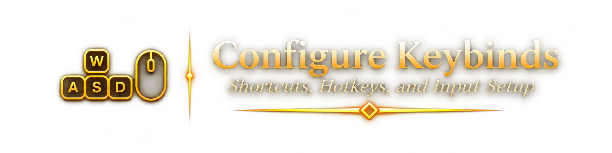
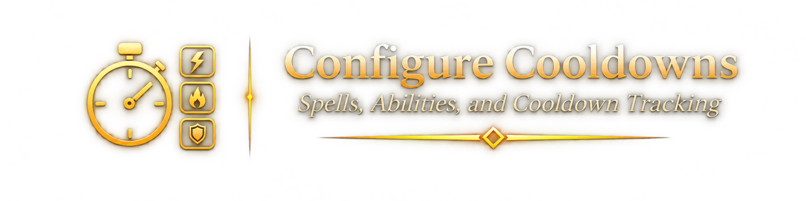
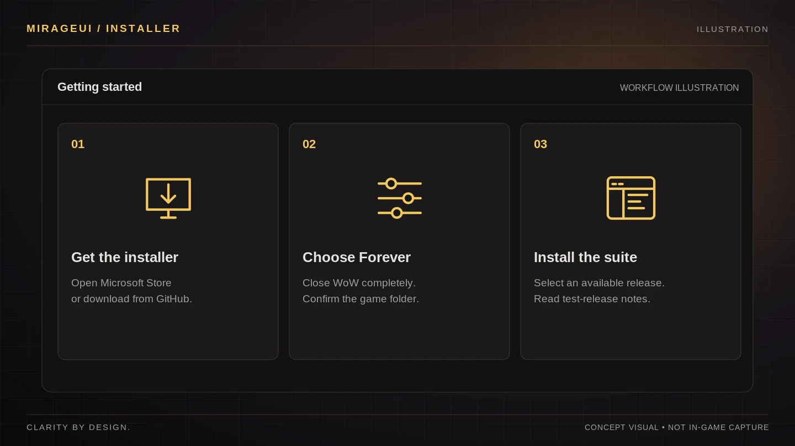

01 / 06 · MirageUI
Feature illustration
Your world. In focus.
A cohesive gameplay interface that places essential information within reach.
Unit frames · Nameplates · Gameplay HUD
A cohesive, customizable interface for World of Warcraft: Forever. Less distraction. More room for your world.
Windows installer via Microsoft Store · Suite downloads & release status
01 / EXPERIENCE
Six feature studies, now paired with the suite’s actual addon branding. Illustrations show design intent, not recorded gameplay or guaranteed release behavior.


Use the arrows, feature tabs, or left/right keys. Select the enlarge icon for a closer look. Feature studies are illustrative.
02 / THE SUITE
Focused tools, one visual language. Actual suite icon artwork, with feature availability governed by your installed version.
A cohesive gameplay interface that places essential information within reach.
A visual companion for the cursor, with configurable rings, contextual cues and alerts.
A dedicated preparation and rest experience for the space between adventures.
A focused workspace for auction and market information, designed to make economic decisions easier to understand.
A collection of connected map, navigation, gathering and information utilities. Coverage and availability vary by release.
Configure the interface around your preferences, with control over its presentation and available features.
Six suite areas represent ten addon folders in the published test package. Current brand artwork may differ from artwork in earlier releases.



Actual settings artwork from the current design baseline. Earlier releases may use different artwork.
03 / DESIGN PHILOSOPHY
A pared-down interface should support the player, not compete with the adventure. Move the slider to compare two illustrative layout studies.

 Dense layoutFocused layout
Dense layoutFocused layoutConcept comparison only. Neither image is a capture of the Blizzard interface or an installed MirageUI build.
THE MIRAGEUI MARK
Gold and ember accents, charcoal surfaces and a subtle sense of motion. Play the short original brand animation.
04 / RELEASES
Choose a release based on compatibility and test status. The installer is available separately; a published installer does not establish that the Suite is stable.
No standard Suite release at the snapshot.
P18 test release · published November 22, 2026. Stress-testing candidate; back up settings first.
Packaged snapshot · checked November 24, 2026. Consult GitHub Releases for current availability.
Forever only; not Retail or Classic. The installer is designed to back up existing MirageUI addon folders, leave unrelated addons and SavedVariables untouched, and use release archives. Check the release notes and available SHA-256 checksums.
05 / GET STARTED
Get the Windows installer first; then select a Suite release. Microsoft Store distributes the installer, while GitHub hosts the Suite archives.
Install MirageUI Installer from Microsoft Store, or download MirageUIInstaller.exe from GitHub Releases.
Fully close World of Warcraft. Launch the installer and confirm your Forever installation location.
Check for releases, select an available build and install. To test a pre-release, enable Include test versions where available. Back up your settings first.
Browse releases ↗
Illustrated workflow · not a screenshot of the installer
Get installer ↗Portable installer & Suite ZIPs ↗06 / SUPPORT
Get help with installation, report unexpected behavior, and share ideas through the public issue tracker.
MirageUI is designed for World of Warcraft: Forever. Consult the notes for each Suite release for its specific client build and interface compatibility.
The Store distributes MirageUI Installer. The application installs and updates the Suite using the public GitHub releases. The portable installer and Suite ZIPs are also available on GitHub.
Include your installer and Suite versions, game client build, the steps to reproduce the problem, and relevant errors. Remove personal or sensitive information from screenshots and logs.
ms-windows-store://pdp/?productid=9P9K6ZRQHZJRMIRAGEUI SUITE
Built for focus. Designed for your adventure.